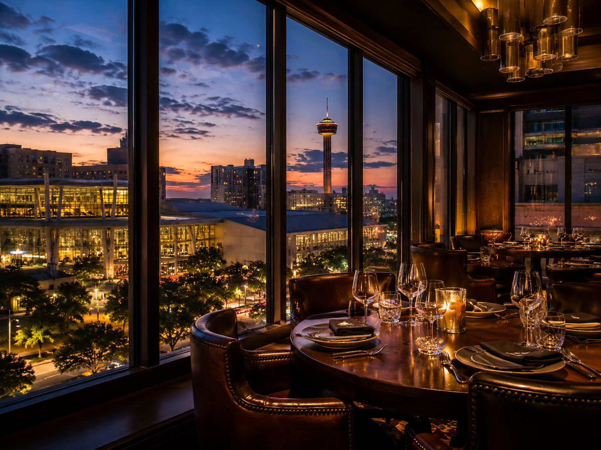
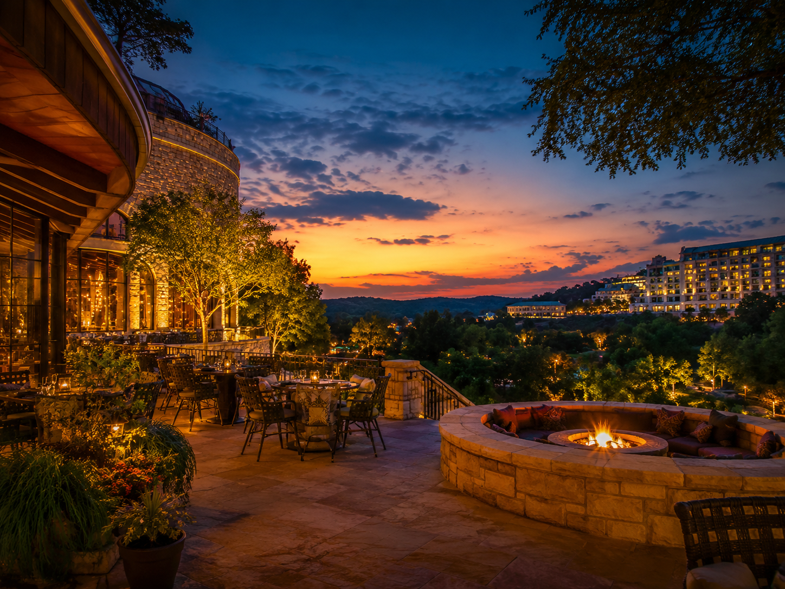
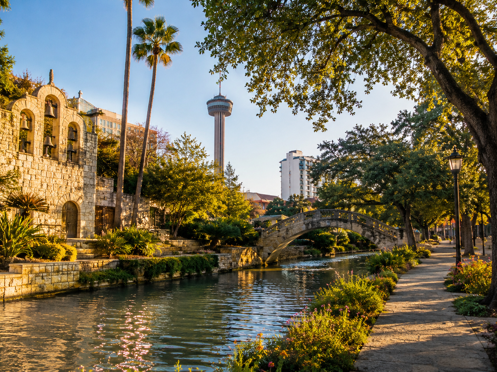
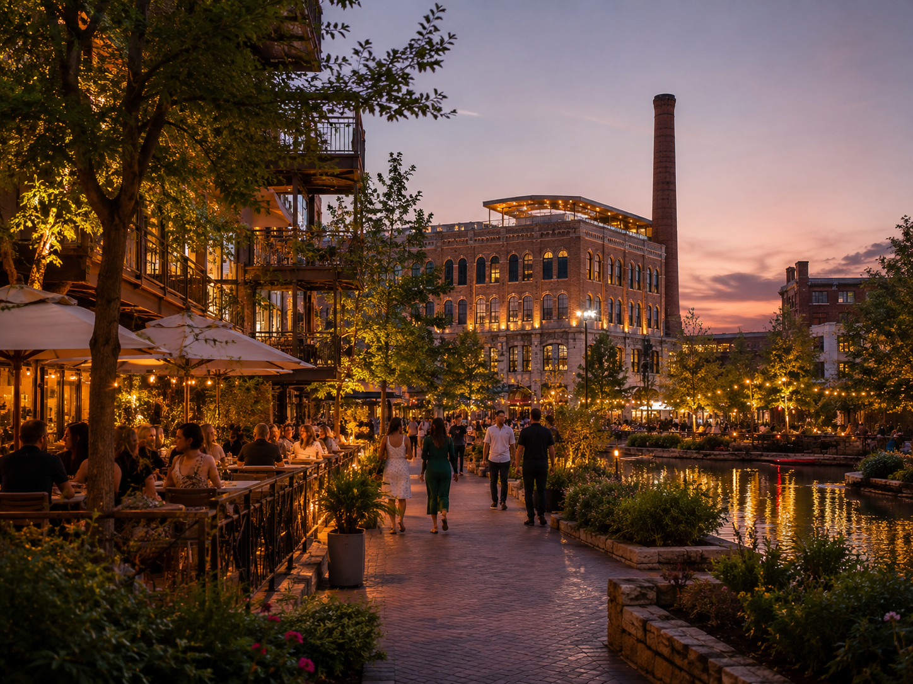
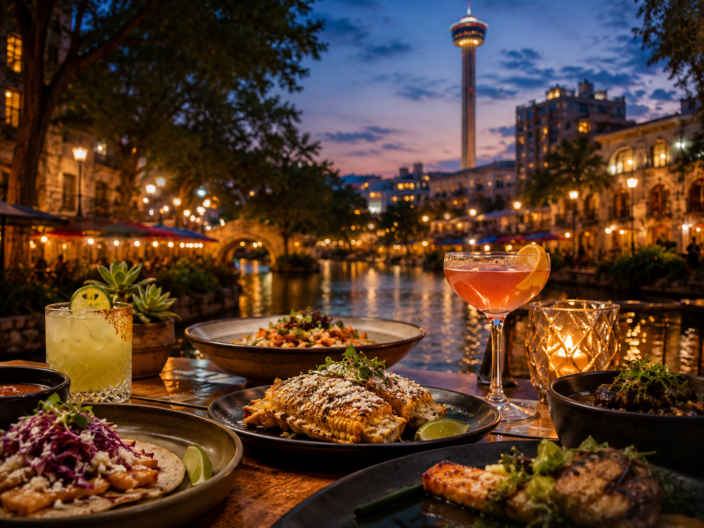

Short on time
Fast downtown move, one strong dinner, or one signature stop before the night gets away.
Ask A Local
Where you are, who you’re with, how much time you have, and what kind of night you want — we’ll route you toward the downtown move, dinner pick, family plan, resort option, or transportation help that fits.
Live concierge
Get instant local answers for food, downtown plans, resort stays, family routes, convention nights, and transportation decisions.
Live · ready
Need hands-on routing or transportation intake? Request human help or use the transportation card below.
Quick start
Choose the kind of help you want and we’ll route you from there.
How it works
Your night
Start with the situation. The right move changes when you’re short on time, staying at a resort, here for business, or moving with family.
Fast downtown move, one strong dinner, or one signature stop before the night gets away.
Decide whether to stay close, go downtown, or build a smoother resort-to-dinner plan.
Client dinner, convention timing, walkable options, and easy pickup logic.
Kid-friendly stops, easier pacing, food that works, and less wasted movement.
Popular moves
Start with the situation that matches your night — or ask the live concierge above. Request human help only when you want that lane.
One good night? Hit the River Walk before the peak, add the Alamo on a first visit, then lock dinner to your vibe — business, Mexican, drinks with a view, or a slower River Walk stretch.
Earlier is easier to walk and photograph. Later is brighter, louder, and busier. Match the time to the energy you want.

After a conference day, your window drives the move: fast downtown dinner, polished client meal, or a simple night without logistics stress.

Three different resort zones: JW Marriott (TPC / north), La Cantera / The Rim (northwest), and Hyatt Hill Country / SeaWorld (west). Pick stay-close convenience or a downtown night that feels worth the drive.

Pick the day type first — active, downtown, kid-friendly food, or a lighter mix that keeps everyone in a good mood.
Airport, resort, downtown, dinner, or a night-out chain — ask for route and timing support when you want less guesswork.
More local moves
Three strong add-ons when you already know your lane.

Add to your routeClip onto a downtown night when you want a more local-feeling stop with room to roam.
Explore PearlQuick culture and color if you’re already routing through downtown.
See Market Square
Add to your routeWhen dinner is the main event, match mood to the right picks without rebuilding the night.
Find food picksHuman help
If the live concierge above got you close but you want someone to pick up the details, tell us where you’re staying, who you’re with, and what kind of experience you want.
Behind the guide
Most guides hand you a list. Where To Go SA starts with your situation — where you are, who you’re with, how much time you have, and what kind of night you want. That is also the live proof of how The AI Plug thinks about smarter customer routing.
The answer changes based on timing, group, location, and energy.
Downtown, resort, business, family, and food choices get organized into a clearer move.
The same routing logic can help businesses handle leads, calls, forms, and follow-up.
Start with your situation. We’ll point you toward the cleaner route.